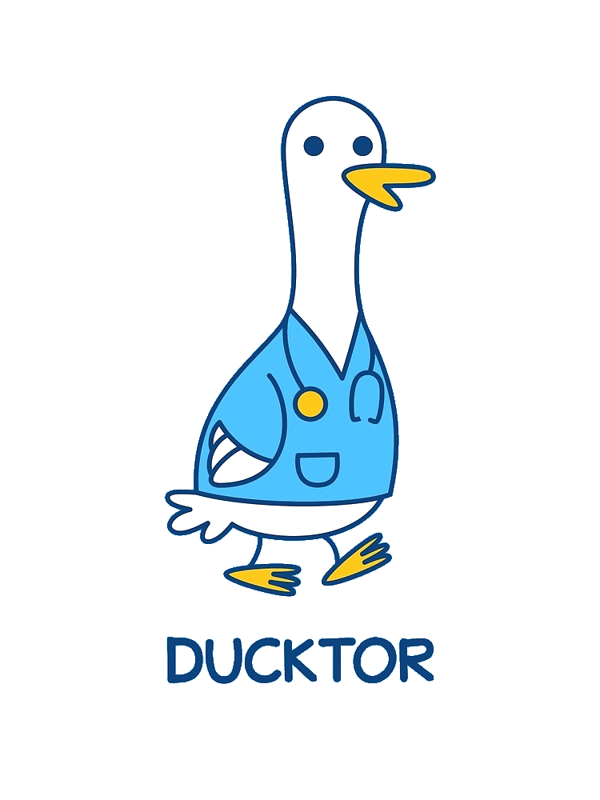

ATENÇÃO: PÁGINA EM CONSTRUÇÃO
Abaixo a medicina!
AVISO: Esta página se dedica a críticas realistas à medicina como ramo profissional e científico. Todas as visões são do autor e não da comunidade médica em geral. Seu conteúdo deve ser lido sob a perspectiva da ironia e do humor.
AVISO 2: Esta página está em constante mudança.
Para neutralizar odores, o bico era preenchido com flores, lavanda ou, a depender da indicação, esponjas ao vinagre.
Classificações médicas
Autor desconhecido, c. 2020.
Contém ironia, óbvio. Porém, uma realidade oculta reside no coração de todo médico: a insana sede por classificações! Em certos casos, beira o ridículo:
- Os aneurismas de aorta, e.g., se classificam com relação ao seu diâmetro, do qual, 1mm de diferença significa a brusca mudança de conduta entre “tratamento conservador” e cirurgia radical. Ainda bem que se popularizou a cirurgia endovascular, porque há menos de duas décadas atrás tal procedimento consistia basicamente numa agressiva laparatomia.
- A dor torácica pode ser tipicamente anginosa, dita quando suas características são clássicas de uma dor precordial. Porém, isso não é suficiente. Nas provas, ela se chama “Dor do tipo A”. Eu chamo este fetish de tara taxônomica.
- O exame físico do baço espera, na normalidade, que ele não seja palpável. Caso seja, classifica-se o baço em três graus, a depender da altura da palpação. O mais lógico seria reportarmos a altura da palpação em si, não? Inclusive, o marco anatômico da tal classificação é a cicatriz umbilical, o que faz menos sentido ainda porque seria ainda mais óbvio registrarmos a que distância exata do marco está a palpação, para fins de acompanhamento. Vai entender.
Tara taxonômica
Para parecer inteligente em uma roda de conversa entre profissionais da saúde, experimente sempre questionar se as patologias são do tipo 1 ou 2. Mesmo inexistente a tal classificação, alguem se disporá a discuti-la, acredite.
Ainda mais: é possível que haja debate de validade e até de evidências sobre a mentira em curso 😂.
Este fenômeno tem a ver com a origem das maiorias das classificações médicas.
Normalmente, tenta-se compartimentalizar os fenômenos, na tentativa de delinear alguma abordagem sistematizada para cada patologia. Porém, esse fundamento lógico das classificações médicas se perdeu com o tempo, o que há, atualmente, é uma insistência inocente em tal estratégia.
Circus Medicus

Óleo de víboras, bom pra tudo. Panaceia Alles Da
O ano é 2023 e você se lembra da velha caixa de vídeos chamada TV. Liga-a. Uma mulher de meia idade está numa aparente curta estória, explicando inúmeras melhoras na sua vida, desde energia para os filhos até alta libido com seu marido, também de meia idade mas grisalho sorridente. Suas bocas tem sorrisos amplos, ela com 177 dentes, ele com 150. No fim, ela explica:
Este é o óleo de peixe Peixoba, comprovadamente aumenta seu cálcio, sua vitamina Z, diminui o colesterol ruim e quintuplica o bom. Compre já em www.esquemapilantra.com.br!
Engraçado, né? kkkk.
Calma. Mas e aquele seu YouTuber favorito, fitness, que vive te dizendo que bom mesmo é suco de beterraba, correr de lado e beber água com vinagre? Esse você certamente não segue, né?
Mas e aquele que parece muito inteligente, tem um Instagram lotado de fotos de pratos e destinos, uma esposa também muito fit, três cachorros e vende um curso na Hotmart? Esse, também, você não segue. Sei… 😏
Tá, e aquele que tem inúmeros estigmas do uso crônico de esteróides anabolizantes e diz pra você que é natural? Tá bom, chega kkk!.
Impregnado pela dúvida
Me deparei certa vez com um termo peculiar em medicina: impregnação.
Num primeiro momento, no contexto da neurologia, há uma definição específica para impregnação neuroléptica, que se refere a um efeito colateral dos antipsicóticos. Porém, a minha mente de químico que “fui” um dia se sentiu incomodada, já que o termo parecia se referir a farmacodinâmica do medicamento que, de alguma forma, se deposita nos tecidos. Você provavelmente acha o mesmo. Mas não é.
Na cardiologia, o termo reaparece na prescrição da amiodarona, que deve ser feita em dose bem alta inicialmente, sob a desculpa de se alcançar a “impregnação” do medicamento.
Além disso, os digitálicos podem produzir taquiarritmias como efeito colateral e, neste caso, todo esse quadro é chamado de impregnação digitálica.
Na oftalmologia, há certos casos de menção ao termo impregnação do nervo óptico como sinônimo da neurite óptica. Notadamente, o Manual de Emergências Clínica da USP de 2022¹ usa esta associação.
Radiologistas se referem a má difusão do contraste nos diversos tecidos como impregnação difusa. Novamente, é proeminente o uso em neuroimagem.
E assim segue o baile. Um termo curinga, sem expressão ou, no caso do seu uso mais conhecido da impregnação neuroléptica, contém uma conotação de cinética ou dinâmica medicamentosa, aludindo a situação de depósito da substância.
Porém, na ciência de base farmacologia o termo é simplesmente inexistente!
Isto mesmo, experimente abrir o Katzung² e buscar pelo termo que este nem mesmo é citado no livro inteiro! O mesmo vale para pelo menos outros três grandes títulos que pesquisei.
Podemos concluir o seguinte: este é um termo que deve ser encarado com especificidade de cada área em que é citado. Ponto. Ou seria a medicina uma pseudo proto-ciência?
actore non probante reus absolvitur
Questionando meus professores ao longo da formação médica, notei que não há dolo neste ponto fraco da medicina. Na verdade, somos impelidos pela tradição no uso dos termos equivocados ou pessimamente definidos. Me lembra muito o efeito jornalístico na física, e.g. na nomeclatura da singularidade como Big-Bang, um termo jornalístico irônico que acabou por se tornar o nome oficial da cosmologia moderna para a primeira expansão do universo. Depois de um tempo, a cultura e a tradição já investiram tanto sobre o termo que este é adquirido oficialmente ao corpus, se tornando parte daquele campo científico.
Perdoável, mas cômico, pelo menos.
A grande festa: publicações “científicas” em medicina
Em breve.
Referências
- Velasco, Irineu Tadeu; Brandão Neto, Rodrigo Antonio; Souza, Heraldo Possolo de; Marino, Lucas Oliveira; Marchini, Julio Flávio Meirelles (eds). Manual de medicina de emergência. BARUERI: Manole, 2018.
- Bertram G. Katzung, Anthony J. Trevor. Farmacologia Básica e Clínica - 13.ed. McGraw-Hill, 2017 ISBN 8580555973, 9788580555974.